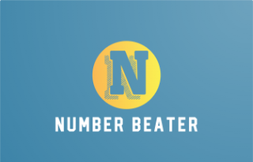

<!doctype html>
<html lang="ja"><head><meta charset="utf-8"><meta name="viewport" content="width=device-width,initial-scale=1,viewport-fit=cover">
<title>NUMBER BEATER</title>
<link rel="preconnect" href="https://fonts.googleapis.com"><link rel="preconnect" href="https://fonts.gstatic.com" crossorigin>
<link href="https://fonts.googleapis.com/css2?family=Fredoka:wght@600;700&family=M+PLUS+Rounded+1c:wght@500;700;800&display=swap" rel="stylesheet">
<style>
/* miss maths と同じ、生成りの地に白いカード。部屋ごとに10問を速く解く */
*{box-sizing:border-box}
:root{
  color-scheme:light;
  --bg:#f7f5ef;--ink:#2f3437;--ink2:#7b766d;--card:#fff;--edge:#ebe5da;
  --star:#ffb627;--star-d:#c77c00;--ok:#3f9b4a;--ok-s:#ebfbea;--ng:#d9534f;--ng-s:#fdeceb;--blue-d:#3f7f93;
  --f1:#fff0f4;--f1d:#b5607a;--f2:#fff1dc;--f2d:#9a5a12;--f3:#e9f5f9;--f3d:#3f7f93;--f4:#ebfbea;--f4d:#3f9b4a;--f5:#efe9fd;--f5d:#5b3fb8;
}
html,body{margin:0;min-height:100%;background:var(--bg);color:var(--ink);font-family:'Hiragino Maru Gothic ProN','M PLUS Rounded 1c',-apple-system,BlinkMacSystemFont,sans-serif}
body{padding-left:env(safe-area-inset-left);padding-right:env(safe-area-inset-right)}
button{font:inherit;color:inherit;cursor:pointer;-webkit-tap-highlight-color:transparent}
button:focus-visible,a:focus-visible{outline:3px solid #8cbfd0;outline-offset:3px}
main{max-width:1080px;margin:0 auto;padding:22px 28px 40px;position:relative}
.plaza{position:absolute;left:28px;top:22px;display:inline-flex;align-items:center;height:36px;padding:0 16px;border-radius:999px;background:#fff;border:2px solid var(--edge);color:#6b6760;font-size:14px;font-weight:800;text-decoration:none}
/* ロゴ */
.hero{text-align:center;margin:6px 0 24px}
.logo{margin:0;font-family:'Fredoka','M PLUS Rounded 1c',sans-serif;font-weight:700;font-size:clamp(40px,7vw,72px);letter-spacing:.03em;line-height:1;display:inline-flex;align-items:center;gap:.04em;color:#2f3437}
.logo .m2{color:#e8553f}
.logo img{display:block;width:min(320px,62vw);height:auto;border-radius:18px;box-shadow:0 8px 22px rgba(200,120,160,.18)}
@keyframes spin{to{transform:rotate(360deg)}}
.sub{margin:10px 0 0;font-size:clamp(14px,1.8vw,17px);color:var(--ink2);font-weight:800;letter-spacing:.12em}
.total{display:inline-flex;gap:14px;margin-top:12px;font-size:13px;font-weight:800;color:var(--ink2)}
.total b{color:var(--star-d);font-size:16px}
/* フロア */
.floor{margin:0 0 24px}
.fhead{display:flex;align-items:baseline;gap:12px;margin:0 4px 10px;flex-wrap:wrap}
.fno{font-size:12px;font-weight:800;letter-spacing:.14em;color:var(--ink2)}
.fname{margin:0;font-size:22px;font-weight:800}
.fsub{font-size:13px;font-weight:700;color:var(--ink2)}
.fstar{margin-left:auto;font-size:13px;font-weight:800;color:var(--star-d)}
.rooms{display:grid;grid-template-columns:repeat(3,minmax(0,1fr));gap:12px}
.room{display:flex;gap:12px;align-items:center;text-align:left;background:var(--card);border:2px solid var(--edge);border-radius:20px;padding:12px 14px;transition:transform .15s,box-shadow .15s}
.room:hover{transform:translateY(-2px);box-shadow:0 8px 20px rgba(80,70,50,.10)}
.room:active{transform:scale(.98)}
.room .ic{flex:none;width:54px;height:54px;border-radius:15px;display:flex;align-items:center;justify-content:center;font-family:'Fredoka','M PLUS Rounded 1c',sans-serif;font-weight:700;font-size:22px;background:var(--fb);color:var(--fd)}
.room .tx{min-width:0;flex:1}
.room .no{font-size:11px;font-weight:800;color:var(--ink2);letter-spacing:.06em}
.room h3{margin:1px 0 2px;font-size:17px;font-weight:800;line-height:1.3}
.room .bt{font-size:12px;font-weight:800;color:var(--ink2)}
.stars{display:inline-flex;gap:1px;font-size:17px;line-height:1;letter-spacing:0}
.stars i{font-style:normal;color:#ddd6c8}
.stars i.on{color:var(--star);text-shadow:0 1px 0 var(--star-d)}
.foot{margin-top:30px;text-align:center;color:#a39d91;font-size:13px;font-weight:700}
.foot button{background:none;border:0;text-decoration:underline;color:#a39d91;font-size:12px;font-weight:700}
@media(max-width:900px){.rooms{grid-template-columns:repeat(2,minmax(0,1fr))}}
@media(max-width:560px){main{padding:16px}.plaza{position:static;margin-bottom:8px}.rooms{grid-template-columns:minmax(0,1fr)}}

/* ===== 部屋 ===== */
.rbar{display:flex;align-items:center;gap:12px;margin-bottom:14px}
.back{height:40px;padding:0 16px;border-radius:999px;background:#fff;border:2px solid var(--edge);font-size:14px;font-weight:800;color:#6b6760;flex:none}
.rname{min-width:0}
.rname small{display:block;font-size:11px;font-weight:800;color:var(--ink2);letter-spacing:.08em}
.rname b{display:block;font-size:20px;font-weight:800;white-space:nowrap;overflow:hidden;text-overflow:ellipsis}
.timer{margin-left:auto;flex:none;font-family:'Fredoka',sans-serif;font-weight:700;font-size:28px;color:var(--ink);min-width:110px;text-align:right;font-variant-numeric:tabular-nums}
.timer small{font-size:14px;color:var(--ink2);margin-left:2px}
.goal{flex:none;font-size:12px;font-weight:800;color:var(--star-d);background:#fff6df;border-radius:999px;padding:4px 10px}
.pips{display:flex;gap:6px;margin:0 0 14px}
.pips i{flex:1;height:10px;border-radius:5px;background:#e6e0d4}
.pips i.ok{background:var(--ok)}
.pips i.ng{background:var(--ng)}
.pips i.now{background:#b9b1a2}
.stage{position:relative;background:#fff;border:2px solid var(--edge);border-radius:28px;padding:28px 28px 24px;min-height:540px;display:flex;flex-direction:column}
.qno{font-size:13px;font-weight:800;color:var(--ink2)}
.q{flex:1;display:flex;flex-direction:column;align-items:center;justify-content:center;text-align:center;padding:10px 0 18px;min-height:200px}
.q .qq{font-size:clamp(28px,5vw,52px);font-weight:800;line-height:1.3}
.q .qq.long{font-size:clamp(22px,3.4vw,34px)}
.q .qp{margin-top:8px;font-size:18px;font-weight:800;color:var(--ink2)}
.ch{display:grid;grid-template-columns:repeat(3,minmax(0,1fr));gap:14px}
.c{position:relative;min-height:112px;border-radius:22px;background:#fff;border:3px solid var(--edge);font-size:clamp(22px,3.6vw,36px);font-weight:800;padding:8px;display:flex;align-items:center;justify-content:center;gap:10px;box-shadow:0 4px 0 #e2dbcc;transition:transform .06s}
.c .k{position:absolute;left:12px;top:8px;font-size:12px;color:#b9b1a2;font-family:'Fredoka',sans-serif}
.c:not(:disabled):active{transform:translateY(3px);box-shadow:0 1px 0 #e2dbcc}
.c:disabled{cursor:default}
.c.ok{background:var(--ok-s);border-color:var(--ok);box-shadow:0 4px 0 #9dd3a2}
.c.ng{background:var(--ng-s);border-color:var(--ng);box-shadow:0 4px 0 #f0b3b1}
.c.dim{opacity:.4}
.fb{margin-top:16px;display:flex;align-items:center;gap:14px;background:#fffaf0;border:2px solid #f1e3c5;border-radius:18px;padding:12px 16px}
.fb p{margin:0;flex:1;font-size:16px;font-weight:700;line-height:1.6}
.fb p b{color:var(--ng)}
.fb p b.okb{color:var(--ok)}
.fb.retry{background:var(--ng-s);border-color:#f3c4c2}
.next{flex:none;height:52px;padding:0 26px;border-radius:16px;border:0;background:#2f3437;color:#fff;font-size:17px;font-weight:800}
.maru{position:absolute;left:50%;top:38%;width:170px;height:170px;margin:-85px 0 0 -85px;border:16px solid var(--ok);border-radius:50%;opacity:0;pointer-events:none;animation:maru .45s ease-out}
@keyframes maru{0%{opacity:.9;transform:scale(.5)}100%{opacity:0;transform:scale(1.25)}}
.pop{position:absolute;right:26px;top:20px;font-family:'Fredoka',sans-serif;font-weight:700;pointer-events:none;animation:pop .7s ease-out both}
.pop.mash{font-size:44px;color:#e8553f;text-shadow:0 3px 0 #ffd2c4}
.pop.combo{font-size:24px;color:var(--star-d)}
@keyframes pop{0%{opacity:0;transform:scale(.4) rotate(-12deg)}25%{opacity:1;transform:scale(1.15) rotate(4deg)}70%{opacity:1;transform:scale(1)}100%{opacity:0;transform:translateY(-14px)}}
.fr{display:inline-flex;flex-direction:column;align-items:center;vertical-align:middle;line-height:1.05;margin:0 .1em;font-size:.82em}
.fr>span:first-child{border-bottom:.07em solid currentColor;padding:0 .15em}
/* 結果 */
.res{position:absolute;inset:0;background:rgba(255,255,255,.97);border-radius:26px;display:flex;flex-direction:column;align-items:center;justify-content:center;gap:12px;text-align:center;animation:fade .25s ease-out}
@keyframes fade{from{opacity:0}to{opacity:1}}
.res h2{margin:0;font-family:'Fredoka','M PLUS Rounded 1c',sans-serif;font-size:44px;font-weight:700}
.res .big{display:flex;gap:6px}
.res .big i{font-style:normal;font-size:64px;line-height:1;color:#e6e0d4;opacity:0;animation:sin .4s ease-out forwards}
.res .big i.on{color:var(--star);text-shadow:0 3px 0 var(--star-d)}
@keyframes sin{0%{opacity:0;transform:scale(.3) rotate(-30deg)}70%{opacity:1;transform:scale(1.2)}100%{opacity:1;transform:none}}
.res .line{font-size:18px;font-weight:800}
.res .line b{font-family:'Fredoka',sans-serif;font-size:30px}
.res .rule{font-size:13px;font-weight:700;color:var(--ink2)}
.res .nb{color:#e8553f;font-weight:800}
.rbtns{display:flex;gap:10px;flex-wrap:wrap;justify-content:center;margin-top:6px}
.rbtns button{height:56px;padding:0 24px;border-radius:16px;font-size:17px;font-weight:800;border:2px solid var(--edge);background:#fff}
.rbtns .again{background:#2f3437;color:#fff;border-color:#2f3437;padding:0 34px}
.miss{margin:4px 0 0;padding:0;list-style:none;font-size:14px;font-weight:700;color:var(--ink2);max-width:640px}
.miss li{margin:2px 0}
.miss b{color:var(--ink)}
@media(max-width:560px){.ch{grid-template-columns:minmax(0,1fr)}.c{min-height:72px}.stage{min-height:0;padding:18px}.timer{font-size:22px;min-width:80px}.goal{display:none}}
@media (prefers-reduced-motion:reduce){.logo .st,.maru,.pop{animation:none}.res .big i{animation:none;opacity:1}}
</style></head><body><main id="app"></main>
<script>
(function(){
"use strict";
/* ===== 問題をつくる道具 ===== */
const ri=(a,b)=>a+Math.floor(Math.random()*(b-a+1));
const pick=a=>a[Math.floor(Math.random()*a.length)];
const R=x=>Math.round(x*1e6)/1e6;
const S=x=>String(R(x));
function shuffle(a){a=a.slice();for(let i=a.length-1;i>0;i--){const j=Math.floor(Math.random()*(i+1));[a[i],a[j]]=[a[j],a[i]];}return a;}
/* Q(問い, 正解, まちがいの候補, 解説, そえ書き) … 候補から、正解とちがうものを2つ選ぶ */
function Q(q,a,cands,e,p){
  a=String(a);const d=[];
  const ok=s=>s!==a&&d.indexOf(s)<0&&!/NaN|undefined|Infinity|^-|\d\.\d{5,}/.test(s);
  for(const x of cands){const s=String(x);if(ok(s))d.push(s);if(d.length===2)break;}
  // 候補が足りないときは、正解の数を少し変えてつくる
  const m=a.match(/\d+(\.\d+)?/);
  if(m)for(const k of [2,10,0.5,0.1]){if(d.length===2)break;const s=a.replace(m[0],S(+m[0]*k));if(ok(s))d.push(s);}
  return {q,a,d,e:e||'',p:p||''};
}
const U=(v,u)=>S(v)+u;
const range=(a,b,skip)=>{const o=[];for(let i=a;i<=b;i++)if(!(skip||[]).includes(i))o.push(i);return o;};

/* --- FLOOR 01 見ぬく数 --- */
const TIP={7:'7の倍数は、形ごと覚えるのが近道。',11:'11の倍数は、1つおきの位の数の和の差が0か11の倍数。',13:'13の倍数は、形ごと覚えるのが近道。',17:'17の倍数は、形ごと覚えるのが近道。',19:'19の倍数は、20の倍数から19を引いた形。',37:'37×3＝111。111の倍数は37の倍数。'};
function mult(p,ks){return ()=>{
  const k=pick(ks),n=p*k,f=ri(0,2);
  if(f===0)return Q(p+'×'+k,n,[p*(k+1),p*(k-1),n+10,n-10],p+'×'+k+'＝'+n+'。','＝ ？');
  if(f===1)return Q(n+' ＝ '+p+'×□',k,[k+1,k-1,k+2],n+'＝'+p+'×'+k+'。','□は？');
  const nd=[];[1,-1,2,-2,3,-3,4,-4,5,-5,6,-6].forEach(o=>{const x=n+o;if(x%p)nd.push(x);});
  return Q(p+'の倍数はどれ？',n,shuffle(nd),n+'＝'+p+'×'+k+'。'+TIP[p],'');
};}
function squares(ks){return ()=>{
  const k=pick(ks),n=k*k,f=ri(0,1);
  if(f===0)return Q(k+'×'+k,n,[n-1,n+k,n-k,n+1],k+'×'+k+'＝'+n+'。'+(k-1)+'×'+(k+1)+'＝'+(n-1)+' と1ちがい。','＝ ？');
  return Q(n+' ＝ □×□',k+'×'+k,[(k-1)+'×'+(k+1),k+'×'+(k+1),(k-1)+'×'+k],n+'＝'+k+'×'+k+'（'+k+'の2乗）。','□は？');
};}
const PRIMES=range(41,199).filter(n=>{for(let i=2;i*i<=n;i++)if(n%i===0)return false;return true;});
const TRAP=[49,51,57,77,87,91,111,117,119,121,133,143,153,161,169,171,187];
const fac=n=>{for(let i=2;i<n;i++)if(n%i===0)return i+'×'+n/i;return '';};
function primeQ(){const p=pick(PRIMES),t=shuffle(TRAP).slice(0,2);
  return Q('素数はどれ？',p,t,p+'は素数。'+t.map(x=>x+'＝'+fac(x)).join('、')+'。','');}

/* --- FLOOR 02 覚える数 --- */
function pi(ks){return ()=>{
  const k=pick(ks),v=R(314*k/100),f=ri(0,1);
  if(f===0)return Q('3.14×'+k,S(v),[S(314*(k+1)/100),S(v+0.1),S(v-0.1),S(314*(k-1)/100)],'3.14×'+k+'＝'+S(v)+'。','＝ ？');
  return Q(S(v)+' ＝ 3.14×□',k,[k+1,k-1,k+2],'3.14×'+k+'＝'+S(v)+'。','□は？');
};}
function fracs(list){return ()=>{
  const [a,b]=pick(list),v=S(a/b),f=ri(0,1),others=shuffle(list.filter(x=>x[0]*b!==a*x[1]));
  if(f===0)return Q('{'+a+'/'+b+'}',v,others.map(x=>S(x[0]/x[1])),'{'+a+'/'+b+'}＝'+a+'÷'+b+'＝'+v+'。','を小数にすると？');
  return Q(v,'{'+a+'/'+b+'}',others.map(x=>'{'+x[0]+'/'+x[1]+'}'),v+'＝{'+a+'/'+b+'}。','を分数にすると？');
};}
function kufu(){
  const f=ri(0,2);
  if(f===0){const m=ri(2,12),x=4*m,n=25*x;return Q('25×'+x,n,[n+25,n-25,n*10],'25×4＝100 を使う。25×'+x+'＝25×4×'+m+'＝'+n+'。','＝ ？');}
  if(f===1){const m=ri(2,9),x=8*m,n=125*x;return Q('125×'+x,n,[n+125,n-125,n/10],'125×8＝1000 を使う。125×'+x+'＝125×8×'+m+'＝'+n+'。','＝ ？');}
  const m=pick([8,16,24,32,40,48,56,64,72,80]),n=m/8;return Q('0.125×'+m,S(n),[S(n*10),S(n+1),S(n/10)],'0.125＝{1/8}。'+m+'の{1/8}で'+S(n)+'。','＝ ？');
}
function tokei(){
  const f=ri(0,2);
  if(f===0){const m=ri(2,50);return Q('長針が'+m+'分で進む角度',U(6*m,'°'),[U(0.5*m,'°'),U(5.5*m,'°'),U(6*m+6,'°')],'長針は1分で6°。6×'+m+'＝'+6*m+'°。','は？');}
  if(f===1){const m=2*ri(1,60);return Q('短針が'+m+'分で進む角度',U(0.5*m,'°'),[U(6*m,'°'),U(m,'°'),U(5.5*m,'°')],'短針は1分で0.5°。0.5×'+m+'＝'+S(0.5*m)+'°。','は？');}
  const m=2*ri(1,15);return Q('長針と短針が'+m+'分で近づく角度',U(5.5*m,'°'),[U(6.5*m,'°'),U(6*m,'°'),U(5*m,'°')],'1分で 6－0.5＝5.5°。5.5×'+m+'＝'+S(5.5*m)+'°。','は？');
}

/* --- FLOOR 03 単位 --- */
const VALS=[0.2,0.3,0.5,0.8,1.2,1.5,2.5,3,4.5,6,7.2,8,12,25,0.06,0.45];
function conv(pairs,vals){return ()=>{
  // [大きい単位, 小さい単位, 何倍]
  const [big,small,k]=pick(pairs),down=Math.random()<.5,x=pick(vals||VALS);
  const v=down?x:R(x*k),a=down?R(x*k):x,u1=down?big:small,u2=down?small:big;
  return Q(S(v)+u1+' ＝ □'+u2,U(a,u2),[U(a*10,u2),U(a/10,u2),U(a*100,u2),U(a/100,u2)],'1'+big+'＝'+S(k)+small+'。','');
};}
function water(){const v=pick([0.5,1,1.5,2,3,0.2,4]),f=ri(0,1);
  if(f===0)return Q('水'+S(v)+'Lの重さ',U(v,'kg'),[U(v*10,'kg'),U(v*100,'g'),U(v/10,'kg')],'水1L＝1000cm³＝1kg。','は？');
  const c=pick([50,200,300,500,750]);return Q('水'+c+'cm³の重さ',U(c,'g'),[U(c*10,'g'),U(c,'kg'),U(c/10,'g')],'水1cm³＝1g。','は？');}
function hours(){const f=ri(0,2);
  if(f===0){const v=pick([0.1,0.2,0.25,0.3,0.4,0.5,0.6,0.75,0.8,0.9]);return Q(S(v)+'時間 ＝ □分',U(60*v,'分'),[U(100*v,'分'),U(60*v+5,'分'),U(10*v,'分')],'1時間＝60分。60×'+S(v)+'＝'+S(60*v)+'。','');}
  if(f===1){const m=pick([6,12,15,18,24,30,36,42,45,48,54]);return Q(m+'分 ＝ □時間',U(m/60,'時間'),[U(m/100,'時間'),U(m/60+0.1,'時間'),U(m/600,'時間')],m+'÷60＝'+S(m/60)+'。','');}
  const h=ri(1,3),v=pick([0.1,0.2,0.3,0.4,0.6,0.7,0.8,0.9]);return Q(S(h+v)+'時間 ＝ '+h+'時間□分',U(60*v,'分'),[U(10*v,'分'),U(60*v+10,'分'),U(100*v,'分')],'0'+S(v).slice(1)+'時間＝60×'+S(v)+'＝'+S(60*v)+'分。','');}
function speed1(){const v=pick([5,10,15,20,25,30,40]),f=ri(0,1);
  if(f===0)return Q('秒速'+v+'m ＝ 時速□km',U(3.6*v,'km'),[U(v*60,'km'),U(0.36*v,'km'),U(36*v,'km')],'秒速→時速は ×3.6。'+v+'×3.6＝'+S(3.6*v)+'。','');
  return Q('時速'+S(3.6*v)+'km ＝ 秒速□m',U(v,'m'),[U(3.6*3.6*v,'m'),U(v*10,'m'),U(v+5,'m')],'時速→秒速は ÷3.6。'+S(3.6*v)+'÷3.6＝'+v+'。','');}
function speed2(){const f=ri(0,2);
  if(f===0){const m=pick([50,60,70,75,80,90,100,120,150,200,250]);return Q('分速'+m+'m ＝ 時速□km',U(m*60/1000,'km'),[U(m*60/100,'km'),U(m*6/1000,'km'),U(m*60/10000,'km')],m+'×60＝'+m*60+'m＝'+S(m*60/1000)+'km。','');}
  if(f===1){const k=pick([3,4.2,4.8,6,9,12,18,30,36]);return Q('時速'+S(k)+'km ＝ 分速□m',U(k*1000/60,'m'),[U(k*100/6/10,'m'),U(k*60,'m'),U(k*1000/60*10,'m')],S(k)+'km＝'+S(k*1000)+'m。÷60で'+S(k*1000/60)+'m。','');}
  const s=pick([2,3,4,5,8,10,12,15]);return Q('秒速'+s+'m ＝ 分速□m',U(s*60,'m'),[U(s*6,'m'),U(s*600,'m'),U(s*100,'m')],'1分＝60秒。'+s+'×60＝'+s*60+'。','');}

/* --- FLOOR 04 公式（数で） --- */
const cm2='cm²',cm3='cm³';
function tri(){const b=ri(3,14),h=2*ri(2,8)+(b%2?0:1);const A=b*h/2;
  return Q('底辺'+b+'cm、高さ'+h+'cmの三角形の面積',U(A,cm2),[U(b*h,cm2),U(A+b,cm2),U(b+h,cm2)],'底辺×高さ÷2。'+b+'×'+h+'÷2＝'+S(A)+'。','');}
function trap(){let a=ri(2,8),b=a+ri(2,7),h=ri(2,9);if((a+b)*h%2)h++;const A=(a+b)*h/2;
  return Q('上底'+a+'cm、下底'+b+'cm、高さ'+h+'cmの台形の面積',U(A,cm2),[U((a+b)*h,cm2),U(a*b*h/2,cm2),U((a+b)*2,cm2)],'(上底＋下底)×高さ÷2。('+a+'＋'+b+')×'+h+'÷2＝'+A+'。','');}
function rhomb(){const p=2*ri(2,8),q=ri(3,12);const A=p*q/2;
  return Q('対角線が'+p+'cmと'+q+'cmのひし形の面積',U(A,cm2),[U(p*q,cm2),U(A*2+2,cm2),U(p+q,cm2)],'対角線×対角線÷2。'+p+'×'+q+'÷2＝'+A+'。','');}
function circA(){const r=ri(1,10),f=ri(0,1);
  if(f===0)return Q('半径'+r+'cmの円の面積',U(3.14*r*r,cm2),[U(3.14*2*r,cm2),U(3.14*4*r*r,cm2),U(3.14*r,cm2)],'半径×半径×3.14。'+r+'×'+r+'×3.14＝'+S(3.14*r*r)+'。','');
  const d=2*r;return Q('直径'+d+'cmの円の面積',U(3.14*r*r,cm2),[U(3.14*d*d,cm2),U(3.14*d,cm2),U(3.14*r,cm2)],'半径は'+r+'cm。'+r+'×'+r+'×3.14＝'+S(3.14*r*r)+'。','');}
function circL(){const r=ri(1,12),f=ri(0,1);
  if(f===0)return Q('半径'+r+'cmの円の円周',U(3.14*2*r,'cm'),[U(3.14*r,'cm'),U(3.14*r*r,'cm'),U(3.14*4*r,'cm')],'直径×3.14。'+2*r+'×3.14＝'+S(6.28*r)+'。','');
  return Q('直径'+2*r+'cmの円の円周',U(3.14*2*r,'cm'),[U(3.14*4*r,'cm'),U(3.14*r,'cm'),U(3.14*r*r,'cm')],'直径×3.14。'+2*r+'×3.14＝'+S(6.28*r)+'。','');}
const ANG=[[30,12],[45,8],[60,6],[90,4],[120,3],[180,2],[72,5],[40,9]];
function arc(){let g,n,r;do{[g,n]=pick(ANG);r=pick([2,3,4,6,9,12,18]);}while((2*r)%n);const L=R(2*r*3.14*g/360);
  return Q('半径'+r+'cm、中心角'+g+'°のおうぎ形の弧の長さ',U(L,'cm'),[U(r*3.14*g/360,'cm'),U(r*r*3.14*g/360,'cm'),U(2*r*3.14,'cm'),U(L*2,'cm')],'直径×3.14×{'+g+'/360}。'+2*r+'×3.14÷'+n+'＝'+S(L)+'。','');}
function sector(){let g,n,r;do{[g,n]=pick(ANG);r=pick([2,3,4,6,9,10,12]);}while((r*r)%n);const A=R(r*r*3.14*g/360);
  return Q('半径'+r+'cm、中心角'+g+'°のおうぎ形の面積',U(A,cm2),[U(2*r*3.14*g/360,cm2),U(r*r*3.14,cm2),U(r*3.14*g/360,cm2),U(A*2,cm2)],'半径×半径×3.14×{'+g+'/360}。'+r+'×'+r+'×3.14÷'+n+'＝'+S(A)+'。','');}
function prism(){const f=ri(0,1);
  if(f===0){const a=ri(2,9),b=ri(2,9),c=ri(2,9),V=a*b*c;return Q('たて'+a+'cm、横'+b+'cm、高さ'+c+'cmの直方体の体積',U(V,cm3),[U(V/(c)*2+c,cm3),U((a+b)*2*c,cm3),U(V*2,cm3)],'たて×横×高さ＝'+V+'。','');}
  const s=pick([6,8,12,15,20,24,30]),h=ri(3,10),V=s*h;return Q('底面積'+s+'cm²、高さ'+h+'cmの柱の体積',U(V,cm3),[U(R(V/3),cm3),U(V/2,cm3),U(s+h,cm3)],'柱は 底面積×高さ。'+s+'×'+h+'＝'+V+'。','');}
function pyramid(){const s=pick([6,9,12,15,18,20,24,27,30,36]),h=ri(2,10);let V=s*h;if(V%3){return pyramid();}V=V/3;
  return Q('底面積'+s+'cm²、高さ'+h+'cmのすいの体積',U(V,cm3),[U(s*h,cm3),U(s*h/2,cm3),U(V+s,cm3)],'すいは 底面積×高さ÷3。'+s+'×'+h+'÷3＝'+V+'。','');}
function hajiki(){const v=pick([4,5,6,12,15,20,30,40,45,50,60]),t=pick([2,3,4,5,1.5,2.5]),d=R(v*t),f=ri(0,2);
  if(f===0)return Q('時速'+v+'kmで'+S(t)+'時間進んだ道のり',U(d,'km'),[U(R(v/t),'km'),U(v+t,'km'),U(d*10,'km')],'道のり＝速さ×時間。'+v+'×'+S(t)+'＝'+S(d)+'。','');
  if(f===1)return Q(S(d)+'kmを時速'+v+'kmで進むのにかかる時間',U(t,'時間'),[U(R(v/d),'時間'),U(t+1,'時間'),U(R(d*v),'時間')],'時間＝道のり÷速さ。'+S(d)+'÷'+v+'＝'+S(t)+'。','');
  return Q(S(d)+'kmを'+S(t)+'時間で進む速さ',U(v,'km')+'（時速）',[U(R(d*t),'km')+'（時速）',U(v*2,'km')+'（時速）',U(v+5,'km')+'（時速）'],'速さ＝道のり÷時間。'+S(d)+'÷'+S(t)+'＝'+v+'。','');}
function wariai(){const x=pick([200,300,400,500,600,800,1200,1500]),p=pick([10,15,20,25,30,40,60,75]),c=R(x*p/100),f=ri(0,2);
  if(f===0)return Q(x+'円の'+p+'%',U(c,'円'),[U(x-c,'円'),U(R(x/(p/100)),'円'),U(c*10,'円')],'くらべる量＝もとにする量×割合。'+x+'×'+S(p/100)+'＝'+S(c)+'。','は？');
  if(f===1)return Q(S(c)+'円は'+x+'円の何%？',p+'%',[S(R(x/c))+'%',(100-p)+'%',S(p*10)+'%'],'割合＝くらべる量÷もとにする量。'+S(c)+'÷'+x+'＝'+S(p/100)+'。','');
  return Q(p+'%が'+S(c)+'円のとき、もとの量',U(x,'円'),[U(R(c*p/100),'円'),U(R(c+x/10),'円'),U(x*10,'円')],'もとにする量＝くらべる量÷割合。'+S(c)+'÷'+S(p/100)+'＝'+x+'。','');}
function noudo(){const w=pick([100,200,250,300,400,500]),c=pick([2,4,5,8,10,12,15,20]),s=R(w*c/100),f=ri(0,2);
  if(f===0)return Q(c+'%の食塩水'+w+'gにとけている食塩',U(s,'g'),[U(R(w/c),'g'),U(w-s,'g'),U(s*10,'g')],'食塩＝食塩水×濃度。'+w+'×'+S(c/100)+'＝'+S(s)+'。','は？');
  if(f===1)return Q('食塩'+S(s)+'gを水'+S(w-s)+'gにとかした食塩水の濃度',c+'%',[(c*2)+'%',S(R(c/2))+'%',(c+5)+'%',S(R(s/(w-s)*100*10)/10)+'%'],'食塩÷食塩水（水＋食塩＝'+w+'g）。'+S(s)+'÷'+w+'＝'+S(c/100)+'。','は？');
  return Q('食塩'+S(s)+'gをふくむ'+c+'%の食塩水',U(w,'g'),[U(R(s*c/100),'g'),U(w-s,'g'),U(w*2,'g')],'食塩水＝食塩÷濃度。'+S(s)+'÷'+S(c/100)+'＝'+w+'。','は何g？');}

/* --- FLOOR 05 図形 --- */
const KAKU=['','','','三角形','四角形','五角形','六角形','七角形','八角形','九角形','十角形','十一角形','十二角形'];
function naikaku(){const n=ri(3,12),s=180*(n-2),f=ri(0,1);
  if(f===0)return Q(KAKU[n]+'の内角の和',U(s,'°'),[U(180*n,'°'),U(180*(n-1),'°'),U(180*(n-3),'°')],'180×('+n+'－2)＝'+s+'°。','は？');
  return Q('内角の和が'+s+'°の多角形',KAKU[n],[KAKU[Math.min(12,n+1)],KAKU[Math.max(3,n-1)],KAKU[Math.min(12,n+2)],KAKU[Math.max(3,n-2)]],s+'÷180＝'+(n-2)+'。'+(n-2)+'＋2＝'+n+'。','は？');}
const REG=[3,4,5,6,8,9,10,12,15,18,20];
const KAN=n=>n<=12?KAKU[n]:(n===15?'十五角形':n===18?'十八角形':'二十角形');
function seita(){const n=pick(REG),ex=360/n,inn=180-ex,f=ri(0,2);
  if(f===0)return Q('正'+KAN(n)+'の1つの内角',U(inn,'°'),[U(ex,'°'),U(180-360/(n+1),'°'),U(180-360/Math.max(3,n-1),'°')],'外角は360÷'+n+'＝'+S(ex)+'°。内角は180－'+S(ex)+'＝'+S(inn)+'°。','は？');
  if(f===1)return Q('正'+KAN(n)+'の1つの外角',U(ex,'°'),[U(inn,'°'),U(180/n,'°'),U(360/(n+1),'°')],'外角の和は360°。360÷'+n+'＝'+S(ex)+'°。','は？');
  return Q('1つの外角が'+S(ex)+'°の正多角形','正'+KAN(n),REG.filter(x=>x!==n).sort((a,b)=>Math.abs(a-n)-Math.abs(b-n)).map(x=>'正'+KAN(x)),'360÷'+S(ex)+'＝'+n+'。','は？');}
function taikaku(){const n=ri(4,12),d=n*(n-3)/2;
  return Q(KAKU[n]+'の対角線の本数',d+'本',[n*(n-3)+'本',(n-3)+'本',(d+n)+'本'],'1つの頂点から'+(n-3)+'本。'+n+'×'+(n-3)+'÷2＝'+d+'。','は？');}
function soji(){const P=[[1,2],[1,3],[2,3],[3,4],[2,5],[3,5],[4,5]],[a,b]=pick(P),f=ri(0,1);
  if(f===0)return Q('相似比 '+a+'：'+b+' のとき、面積比',a*a+'：'+b*b,[a+'：'+b,a*a*a+'：'+b*b*b,2*a+'：'+2*b],'面積比は相似比を2回かける。','は？');
  return Q('相似比 '+a+'：'+b+' のとき、体積比',a*a*a+'：'+b*b*b,[a*a+'：'+b*b,a+'：'+b,3*a+'：'+3*b],'体積比は相似比を3回かける。','は？');}
function rittai(){const n=ri(3,8),kind=ri(0,1),w=pick(['面','辺','頂点']);
  const nm=(kind?KAKU[n].replace('形','すい'):KAKU[n].replace('形','柱'));
  const v=kind?{面:n+1,辺:2*n,頂点:n+1}[w]:{面:n+2,辺:3*n,頂点:2*n}[w];
  const unit=w==='辺'?'本':w==='面'?'つ':'こ';
  const all=kind?[n+1,2*n,n+1,n,2*n+1,n+2]:[n+2,3*n,2*n,2*n+2,3*n-1,n];
  return Q(nm+'の'+w+'の数',v+unit,all.map(x=>x+unit),nm+'：面'+(kind?n+1:n+2)+'、辺'+(kind?2*n:3*n)+'、頂点'+(kind?n+1:2*n)+'。','は？');}

/* ===== 部屋の一覧 ===== */
const FLOORS=[
 {no:'01',name:'見ぬく数',sub:'一見わり切れない数の正体',rooms:[
  {id:'m7',name:'7の倍数',ic:'7',g:mult(7,[11,12,13,14,15,16,17,18,19,21,23,27,29,31,33])},
  {id:'m11',name:'11の倍数',ic:'11',g:mult(11,range(11,39,[20,30]))},
  {id:'m13',name:'13の倍数',ic:'13',g:mult(13,range(11,29,[20]))},
  {id:'m17',name:'17の倍数',ic:'17',g:mult(17,range(11,23,[20]))},
  {id:'m19',name:'19の倍数',ic:'19',g:mult(19,range(11,29,[20]))},
  {id:'m37',name:'37の倍数',ic:'37',g:mult(37,[2,3,4,5,6,7,8,9,11,12,27])},
  {id:'sq1',name:'平方数 11〜19',ic:'n²',g:squares(range(11,19))},
  {id:'sq2',name:'平方数 20〜25',ic:'n²',g:squares(range(20,25))},
  {id:'pr',name:'素数を見ぬく',ic:'P',g:primeQ}]},
 {no:'02',name:'覚える数',sub:'見たらすぐ出る数',rooms:[
  {id:'pi1',name:'3.14×1〜9',ic:'π',g:pi(range(1,9))},
  {id:'pi2',name:'3.14×大きい数',ic:'π',g:pi([10,12,15,16,18,20,24,25,30,36,50])},
  {id:'fr8',name:'分数と小数（4・8）',ic:'⅛',g:fracs([[1,4],[3,4],[1,8],[3,8],[5,8],[7,8],[1,2]])},
  {id:'frx',name:'分数と小数（いろいろ）',ic:'⅕',g:fracs([[1,5],[2,5],[3,5],[4,5],[1,16],[3,16],[1,20],[1,25],[1,40],[1,50],[1,125]])},
  {id:'kf',name:'25と125の計算',ic:'×',g:kufu},
  {id:'tk',name:'時計の角度',ic:'🕒',g:tokei}]},
 {no:'03',name:'単位',sub:'×10か×100か×1000か',rooms:[
  {id:'ul',name:'長さ',ic:'cm',g:conv([['km','m',1000],['m','cm',100],['cm','mm',10],['m','mm',1000]])},
  {id:'ua',name:'面積',ic:'cm²',g:conv([['m²','cm²',10000],['cm²','mm²',100],['km²','m²',1000000]])},
  {id:'uh',name:'a・ha',ic:'ha',g:conv([['a','m²',100],['ha','a',100],['ha','m²',10000],['km²','ha',100]])},
  {id:'uv',name:'体積・かさ',ic:'L',g:conv([['L','cm³',1000],['dL','cm³',100],['L','dL',10],['L','mL',1000],['m³','L',1000],['kL','L',1000],['m³','cm³',1000000]])},
  {id:'uw',name:'重さ・水の重さ',ic:'kg',g:()=>Math.random()<.3?water():conv([['kg','g',1000],['t','kg',1000],['g','mg',1000]])()},
  {id:'ut',name:'時間と分',ic:'⏱',g:hours},
  {id:'us1',name:'時速と秒速',ic:'🚄',g:speed1},
  {id:'us2',name:'分速と時速',ic:'🚲',g:speed2}]},
 {no:'04',name:'公式',sub:'数を入れて、すぐ使う',rooms:[
  {id:'ftri',name:'三角形の面積',ic:'△',g:tri},
  {id:'ftrap',name:'台形の面積',ic:'⏢',g:trap},
  {id:'frh',name:'ひし形の面積',ic:'◇',g:rhomb},
  {id:'fca',name:'円の面積',ic:'●',g:circA},
  {id:'fcl',name:'円周の長さ',ic:'○',g:circL},
  {id:'farc',name:'おうぎ形の弧',ic:'◜',g:arc},
  {id:'fsec',name:'おうぎ形の面積',ic:'◔',g:sector},
  {id:'fpr',name:'柱の体積',ic:'▮',g:prism},
  {id:'fpy',name:'すいの体積',ic:'▲',g:pyramid},
  {id:'fsp',name:'速さ・時間・道のり',ic:'🏃',g:hajiki},
  {id:'fwr',name:'割合',ic:'%',g:wariai},
  {id:'fno',name:'濃度',ic:'🧂',g:noudo}]},
 {no:'05',name:'図形',sub:'形の数を、すぐに',rooms:[
  {id:'gna',name:'内角の和',ic:'⬠',g:naikaku},
  {id:'gse',name:'正多角形の角',ic:'⬡',g:seita},
  {id:'gtk',name:'対角線の本数',ic:'✳',g:taikaku},
  {id:'gso',name:'相似比と面積比・体積比',ic:'⧉',g:soji},
  {id:'grt',name:'柱とすいの面・辺・頂点',ic:'⬢',g:rittai}]}
];


const STAR='<svg class="st" viewBox="0 0 40 40" aria-hidden="true"><path d="M20 2l5.3 11.6 12.7 1.4-9.5 8.6 2.7 12.5L20 29.6 8.8 36.1l2.7-12.5L2 15l12.7-1.4z" fill="#ffb627" stroke="#c77c00" stroke-width="2.4" stroke-linejoin="round"/></svg>';
const N=10;               // 1セットの問題数
const GOAL={'01':30,'02':30,'03':35,'04':50,'05':35};  // ★3つの目標タイム（秒）
const KEYS=['1','2','3'];
const esc=s=>String(s).replace(/[&<>"]/g,c=>({'&':'&amp;','<':'&lt;','>':'&gt;','"':'&quot;'}[c]));
const fmt=t=>esc(t).replace(/\{([^{}\/]+)\/([^{}]+)\}/g,'<span class="fr"><span>$1</span><span>$2</span></span>');
const plain=t=>String(t).replace(/\{([^{}\/]+)\/([^{}]+)\}/g,'$1/$2');

/* 部屋に番号をふる */
const ROOMS=[];FLOORS.forEach(f=>f.rooms.forEach(r=>{r.floor=f;r.no=ROOMS.length+1;r.goal=GOAL[f.no];ROOMS.push(r);}));
const byId=id=>ROOMS.find(r=>r.id===id);

/* 保存 */
const LS='mathmash-v1';
let store={r:{}};
try{const o=JSON.parse(localStorage.getItem(LS)||'null');if(o&&o.r)store=o;}catch(e){}
const save=()=>{try{localStorage.setItem(LS,JSON.stringify(store));}catch(e){}};
const rec=id=>store.r[id]||{s:0,t:0,n:0};

/* 音 */
let actx=null;
function audio(){if(!actx){const A=window.AudioContext||window.webkitAudioContext;if(!A)return null;actx=new A();}if(actx.state==='suspended')actx.resume();return actx;}
function tone(f,d,type,vol,delay){const c=audio();if(!c)return;type=type||'sine';vol=vol==null?.035:vol;delay=delay||0;
  const t=c.currentTime+delay,o=c.createOscillator(),g=c.createGain();o.type=type;o.frequency.setValueAtTime(f,t);
  g.gain.setValueAtTime(0,t);g.gain.linearRampToValueAtTime(vol,t+.008);g.gain.exponentialRampToValueAtTime(.0001,t+d);
  o.connect(g);g.connect(c.destination);o.start(t);o.stop(t+d+.02);}
/* 正解音は ok.mp3（読みこめないときは、これまでの音） */
let okBuf=null,okLoading=false;
const OK_VOL=0.3;  // 正解音の大きさ（1＝元の音のまま）
function loadOk(){const c=audio();if(!c||okBuf||okLoading)return;okLoading=true;
  fetch('ok.mp3').then(r=>r.arrayBuffer()).then(b=>new Promise((res,rej)=>c.decodeAudioData(b,res,rej))).then(buf=>{okBuf=buf;}).catch(()=>{okLoading=false;});}
const okSound=()=>{const c=audio();
  if(c&&okBuf){const s=c.createBufferSource(),g=c.createGain();g.gain.value=OK_VOL;s.buffer=okBuf;s.connect(g);g.connect(c.destination);s.start();return;}
  tone(590,.09);tone(790,.12,'sine',.035,.07);loadOk();};
const mashSound=()=>{tone(784,.07,'square',.02);tone(1047,.07,'square',.02,.05);tone(1568,.14,'square',.018,.1);};
const ngSound=()=>{tone(330,.12,'triangle',.04);tone(262,.16,'triangle',.035,.1);};
const clearSound=n=>{[523,659,784,1047].slice(0,n+1).forEach((f,i)=>tone(f,.18,'triangle',.05,i*.12));};
document.addEventListener('touchstart',function un(){audio();loadOk();document.removeEventListener('touchstart',un);},{passive:true});

const app=document.getElementById('app');
let S0=null; // いまのセット
const starsHTML=(n,cls)=>'<span class="stars'+(cls?' '+cls:'')+'" aria-label="星'+n+'つ">'+[0,1,2].map(i=>'<i class="'+(i<n?'on':'')+'">★</i>').join('')+'</span>';
const sec=ms=>(ms/1000).toFixed(1);

/* ===== ラウンジ ===== */
function viewLounge(){
  const tot=ROOMS.reduce((s,r)=>s+rec(r.id).s,0),full=ROOMS.filter(r=>rec(r.id).s===3).length;
  let h='<a class="plaza" href="https://ainotenoue.github.io/">← ひろばへ</a>'+
    '<header class="hero"><h1 class="logo"></h1>'+
    '<div class="total"><span>★ <b>'+tot+'</b> / '+ROOMS.length*3+'</span><span>★★★の部屋 <b>'+full+'</b> / '+ROOMS.length+'</span></div></header>';
  FLOORS.forEach((f,fi)=>{
    const fs=f.rooms.reduce((s,r)=>s+rec(r.id).s,0);
    h+='<section class="floor"><div class="fhead"><span class="fno">FLOOR '+f.no+'</span><h2 class="fname">'+f.name+'</h2><span class="fsub">'+f.sub+'</span><span class="fstar">★ '+fs+' / '+f.rooms.length*3+'</span></div><div class="rooms">';
    f.rooms.forEach(r=>{const c=rec(r.id);
      h+='<button class="room" data-a="room" data-id="'+r.id+'" style="--fb:var(--f'+(fi+1)+');--fd:var(--f'+(fi+1)+'d)"><span class="ic" aria-hidden="true">'+r.ic+'</span><span class="tx"><span class="no">ROOM '+String(r.no).padStart(2,'0')+'</span><h3>'+r.name+'</h3>'+
        '<span class="bt">'+starsHTML(c.s)+(c.t?'　ベスト '+sec(c.t)+'秒':c.n?'　'+c.n+'回':'')+'</span></span></button>';});
    h+='</div></section>';
  });
  h+='<p class="foot">1つの部屋は10問。全問正解で★★、目標タイム以内なら★★★。まちがえて解説を読んでいる間は、タイマーが止まります。<br>記録はこのiPadのブラウザに保存されます。　<button data-a="reset">記録をリセット</button></p>';
  app.innerHTML=h;
}

/* ===== 部屋 ===== */
function newSet(room){
  const qs=[],seen=new Set();
  for(let i=0;i<N;i++){let q,t=0;do{q=room.g();t++;}while((seen.has(q.q+q.a)||(qs.length&&qs[qs.length-1].q===q.q&&q.q.indexOf('どれ')<0))&&t<30);
    seen.add(q.q+q.a);q.choices=shuffle([q.a].concat(q.d));qs.push(q);}
  return {room,qs,i:0,score:0,combo:0,res:[],t0:0,t1:0,qt:0,done:false,lock:false,ng:[],ex:false};
}
function startRoom(id){
  const r=byId(id);if(!r)return showLounge();
  S0=newSet(r);location.hash='r='+id;drawRoom();
  S0.t0=performance.now();S0.qt=S0.t0;tick();
}
let raf=0;
function tick(){cancelAnimationFrame(raf);const el=document.getElementById('tm');
  if(!S0||S0.done||!el)return;el.innerHTML=sec((S0.pz||performance.now())-S0.t0)+'<small>秒</small>';raf=requestAnimationFrame(tick);}
function drawRoom(fx){
  const s=S0,r=s.room,q=s.qs[s.i];
  const pips=s.qs.map((_,i)=>'<i class="'+(i<s.res.length?(s.res[i]?'ok':'ng'):i===s.i?'now':'')+'"></i>').join('');
  const long=Array.from(plain(q.q)).length>14;
  let ch=q.choices.map((c,j)=>{
    let cls='c';
    const bad=s.ng.indexOf(j)>=0;
    if(s.ex){if(c===q.a)cls+=' ok';else if(bad)cls+=' ng';else cls+=' dim';}
    else if(bad)cls+=' ng';
    return '<button class="'+cls+'" data-a="pick" data-j="'+j+'"'+(s.ex||bad?' disabled':'')+'><span class="k">'+(j+1)+'</span>'+fmt(c)+'</button>';
  }).join('');
  const fb=s.ex?'<div class="fb" role="status"><p><b class="okb">正解は '+fmt(q.a)+'</b>　'+fmt(q.e)+'</p><button class="next" data-a="next">次へ</button></div>':
    s.ng.length?'<div class="fb retry" role="status"><p><b>ちがうよ。</b>もう一度えらぼう！</p></div>':'';
  app.innerHTML='<div class="rbar"><button class="back" data-a="lounge">← ラウンジ</button><div class="rname"><small>FLOOR '+r.floor.no+' '+r.floor.name+' ・ ROOM '+String(r.no).padStart(2,'0')+'</small><b>'+r.name+'</b></div>'+
    '<span class="goal">★★★ '+r.goal+'秒以内</span><div class="timer" id="tm" aria-live="off">'+sec(s.done?s.t1-s.t0:(s.pz||performance.now())-(s.t0||performance.now()))+'<small>秒</small></div></div>'+
    '<div class="pips" aria-label="'+(s.i+1)+'問目 / '+N+'問">'+pips+'</div>'+
    '<section class="stage"><div class="qno">'+(s.i+1)+' / '+N+(s.combo>=2?'　<b style="color:var(--star-d)">'+s.combo+'連続</b>':'')+'</div>'+
    '<div class="q"><div class="qq'+(long?' long':'')+'">'+fmt(q.q)+'</div>'+(q.p?'<div class="qp">'+esc(q.p)+'</div>':'')+'</div>'+
    '<div class="ch">'+ch+'</div>'+fb+(fx||'')+(s.done?resultHTML():'')+'</section>';
  if(!s.done)tick();
}
function pickAns(j){
  const s=S0;if(!s||s.done||s.lock||s.ex||s.ng.indexOf(j)>=0)return;
  const q=s.qs[s.i],ok=q.choices[j]===q.a,dt=performance.now()-s.qt;
  if(ok&&s.ng.length){
    // まちがえたあとに正解：解説を見てから次へ（解説の間はタイマーを止める）
    okSound();s.ex=true;s.pz=performance.now();drawRoom('<div class="maru" aria-hidden="true"></div>');return;
  }
  if(ok){
    s.score++;s.combo++;s.res.push(true);s.lock=true;
    const fast=dt<2500;
    okSound();
    let fx='<div class="maru" aria-hidden="true"></div>';
    if(fast)fx+='<div class="pop mash" aria-hidden="true">MASH!</div>';
    else if(s.combo>=3)fx+='<div class="pop combo" aria-hidden="true">'+s.combo+'連続！</div>';
    // 正解のボタンを緑にして、すぐ次へ
    const btn=app.querySelectorAll('.c')[j];if(btn)btn.classList.add('ok');
    app.querySelector('.stage').insertAdjacentHTML('beforeend',fx);
    setTimeout(()=>{s.lock=false;advance();},fast?330:420);
  }else{
    ngSound();if(!s.ng.length){s.combo=0;s.res.push(false);}s.ng.push(j);drawRoom();
  }
}
function advance(){
  const s=S0;s.ng=[];s.ex=false;if(s.pz){s.t0+=performance.now()-s.pz;s.pz=0;}
  if(s.i+1>=N){finish();return;}
  s.i++;s.qt=performance.now();drawRoom();
}
function finish(){
  const s=S0;s.done=true;s.t1=performance.now();const t=s.t1-s.t0,r=s.room;
  const st=s.score===N?(t<=r.goal*1000?3:2):s.score>=8?1:0;
  const c=rec(r.id);s.prev=Object.assign({},c);
  c.n=(c.n||0)+1;if(st>c.s)c.s=st;
  const had=c.t;s.newBest=false;if(s.score===N&&(!had||t<had)){s.newBest=!!had;c.t=Math.round(t);}
  store.r[r.id]=c;save();
  s.stars=st;s.time=t;
  if(st)clearSound(st);
  drawRoom();
}
function resultHTML(){
  const s=S0,r=s.room,c=rec(r.id);
  const title=s.stars===3?'PERFECT!':s.stars===2?'ALL CLEAR!':s.stars===1?'CLEAR!':'もう一回！';
  const miss=s.qs.filter((_,i)=>!s.res[i]);
  const nx=ROOMS[r.no]||null;
  return '<div class="res" role="dialog" aria-label="結果"><h2>'+title+'</h2>'+
    '<div class="big" aria-label="星'+s.stars+'つ">'+[0,1,2].map(i=>'<i class="'+(i<s.stars?'on':'')+'" style="animation-delay:'+(0.15+i*0.18)+'s">★</i>').join('')+'</div>'+
    '<div class="line">正解 <b>'+s.score+'</b> / '+N+'　タイム <b>'+sec(s.time)+'</b> 秒'+(s.newBest&&s.score===N?'　<span class="nb">ベスト更新！</span>':'')+'</div>'+
    '<div class="rule">★ 8問以上　★★ 全問正解　★★★ 全問正解で'+r.goal+'秒以内'+(c.t?'　｜　ベスト '+sec(c.t)+'秒':'')+'</div>'+
    (miss.length?'<ul class="miss">'+miss.map(q=>'<li>'+fmt(q.q)+(q.p&&q.p!=='＝ ？'&&q.p!=='□は？'?' '+esc(q.p):'')+' → <b>'+fmt(q.a)+'</b></li>').join('')+'</ul>':'')+
    '<div class="rbtns"><button class="again" data-a="again">もう一度</button>'+(nx?'<button data-a="room" data-id="'+nx.id+'">次の部屋 →</button>':'')+'<button data-a="lounge">ラウンジへ</button></div></div>';
}

/* ===== 画面の切りかえ ===== */
function showLounge(){S0=null;cancelAnimationFrame(raf);if(location.hash)history.replaceState(null,'',location.pathname);viewLounge();window.scrollTo(0,0);}
document.addEventListener('click',e=>{
  const b=e.target.closest('[data-a]');if(!b||b.disabled)return;const a=b.dataset.a;
  if(a==='room'){audio();loadOk();startRoom(b.dataset.id);window.scrollTo(0,0);}
  else if(a==='pick')pickAns(+b.dataset.j);
  else if(a==='next')advance();
  else if(a==='again'){startRoom(S0.room.id);}
  else if(a==='lounge')showLounge();
  else if(a==='reset'){if(confirm('すべての部屋の記録（★とベストタイム）を消します。よろしいですか？')){store={r:{}};save();viewLounge();}}
});
document.addEventListener('keydown',e=>{
  if(!S0)return;
  const k=KEYS.indexOf(e.key);
  if(k>=0&&!S0.done)pickAns(k);
  else if(e.key==='Enter'&&S0.ex)advance();
});
window.addEventListener('hashchange',()=>{const m=location.hash.match(/r=(\w+)/);if(!m){if(S0)showLounge();}else if(byId(m[1])&&(!S0||S0.room.id!==m[1]))startRoom(m[1]);});
const m0=location.hash.match(/r=(\w+)/);
if(m0&&byId(m0[1]))startRoom(m0[1]);else viewLounge();
})();
</script>
</body></html>
